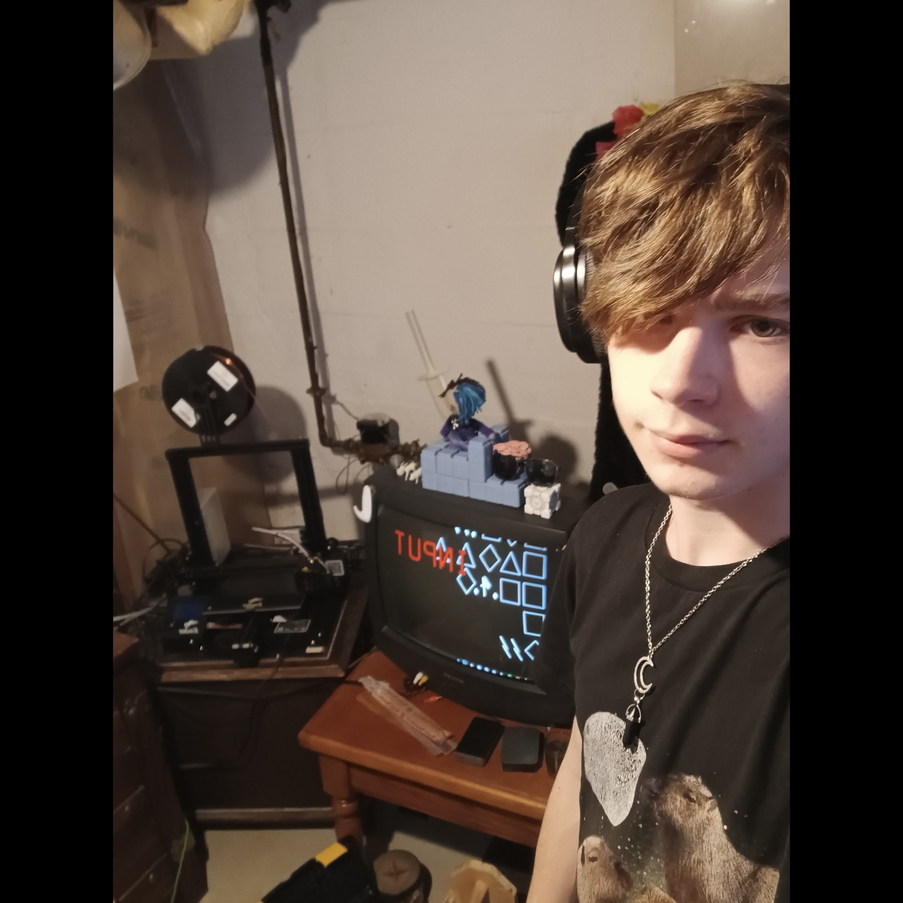

About me

Hi, I'm Seth Lewis(otherwise known as Motif.) I like
to take up a lot of creative projects in various fields,
mostly computer and machine related. My main
motivations for my tech projects are usually
A. because I have a cool idea
B. because I want something custom-made
or C. because the actual thing is too expensive
In particular, my favorite projects are always when I'm making games. Talking about game design and
3d graphics/physics is one of my favorite ways to annoy my friends, if they make the unfortunate decision
to tell me about a game they're playing. I stand by the idea that hypercasuals are hardly games as much as they are drugs,
that a good game developer interacts with their community, and that
video games can absolutely be art in much of the same way as a movie or book.
Other small facts: I love music and art styles from the '80s, capybaras are my spirit animal, and i'm the proud owner of a
spotify playlist
consisting of the Family Guy intro repeated 9,999 times.
I was also a lifeguard at one point, paradoxically.